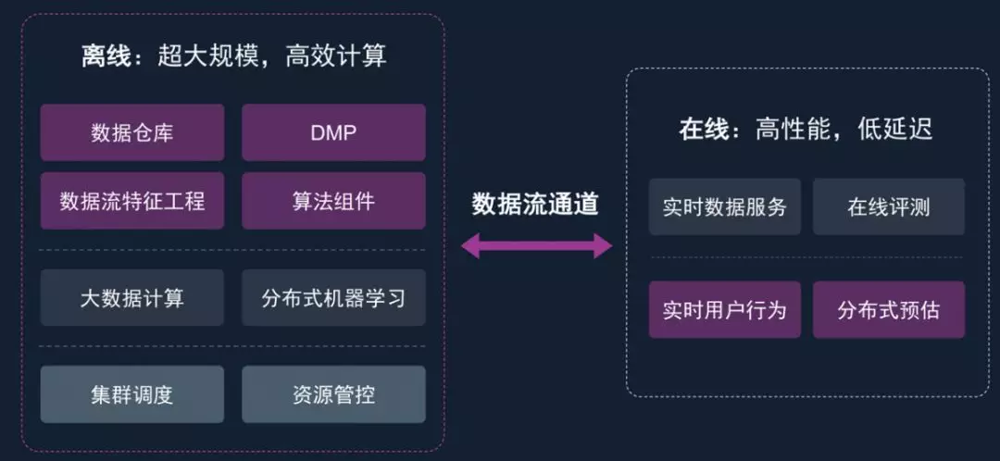

<!DOCTYPE html><html lang="zh-CN"><head><meta charset="utf-8"><meta http-equiv="X-UA-Compatible" content="IE=edge"><meta name="viewport" content="width=device-width, initial-scale=1"><meta name="author" content="JiaojiaoFu"><link rel="alternative" href="/atom.xml" title="姣姣的个人主页" type="application/atom+xml"><link rel="icon" href="/favicon.png"><title>MindAlpha 调研报告 - 姣姣的个人主页</title><link rel="stylesheet" href="/css/main.css" type="text/css">
<link rel="stylesheet" href="/js/fancybox/jquery.fancybox.min.css" type="text/css">
<!--[if lt IE 9]><script>(function(a,b){a="abbr article aside audio bdi canvas data datalist details dialog figcaption figure footer header hgroup main mark meter nav output progress section summary template time video".split(" ");for(b=a.length-1;b>=0;b--)document.createElement(a[b])})()</script><![endif]--><script src="/js/jquery-3.1.1.min.js" type="text/javascript"></script>
<script src="/js/fancybox/jquery.fancybox.min.js" type="text/javascript"></script>
</head><body style="opacity:0"><header class="head"><h1 class="head-title u-fl"><a href="/">姣姣的个人主页</a></h1><nav class="head-nav u-fr"><ul class="head-nav__list"><li class="head-nav__item"><a class="head-nav__link" href="/archives">カタログ/（目录）</a></li></ul></nav></header><main class="main"><article class="post"><header class="post__head"> <time class="post__time" datetime="2018-10-23T16:00:00.000Z">October 24, 2018</time><h1 class="post__title"><a href="/2018/10/24/MindAlpha调研报告/">MindAlpha 调研报告</a></h1><div class="post__main echo"><p>MindAlpha 机器学习平台是汇量科技（Mobvista）推出的全流程一站式机器学习平台。MindAlpha平台功能覆盖了广告、搜索、推荐等互联网核心业务对机器学习平台的各方面需求，包括大规模实时数据流和高效特征工程框架，百亿特征、千亿样本的大规模复杂模型训练框架，以及海量请求的高性能低延迟的在线预测框架。<br><a id="more"></a></p>
<h1 id="MindAlpha_调研报告">MindAlpha 调研报告</h1>
<p><a href="https://www.mobvista.com/cn/" target="_blank" rel="external">MindAlpha 平台链接</a></p>
<h2 id="一、_背景">一、 背景</h2>
<p>MindAlpha 机器学习平台是汇量科技（Mobvista）推出的全流程一站式机器学习平台。Mobvista是全球领先的移动营销平台，目前已建立起海外覆盖FB/Google之外超3万个独立媒体的流量矩阵，广告+统计SDK覆盖3.3亿日独立设备；涉及从移动应用安装前到安装后全生命周期用户行为的海量数据覆盖。目前变现收入55%以上来自海外超过60个国家，海外广告主资源丰富，已规模化盈利。<br>MindAlpha平台功能覆盖了广告、搜索、推荐等互联网核心业务对机器学习平台的各方面需求，包括大规模实时数据流和高效特征工程框架，百亿特征、千亿样本的大规模复杂模型训练框架，以及海量请求的高性能低延迟的在线预测框架。</p>
<h2 id="二、_平台简介">二、 平台简介</h2>
<h3 id="1-_MindAlpha_计算平台架构">1. MindAlpha 计算平台架构</h3>
<p>MindAlpha平台构建于超大规模分布式计算平台之上，包含了与开源生态兼容的云端部署的分布式集群，通过自主研发的多种计算、服务框架，构建了大数据计算服务、分布式机器学习服务以及在线实时预测、评估以及实时数据服务。整体的计算平台架构如下图所示：</p>
<p><br>图1 MindAlpha 计算平台架构图</p>
<h4 id="1-1_数据仓库介绍">1.1 <a href="https://baike.baidu.com/item/%E6%95%B0%E6%8D%AE%E4%BB%93%E5%BA%93" target="_blank" rel="external">数据仓库介绍</a></h4>
<ul>
<li>数据仓库的特点</li>
</ul>
<p>1)、数据仓库是面向主题的；<br>操作型数据库的数据组织面向事务处理任务，而数据仓库中的数据是按照一定的主题域进行组织。主题是指用户使用数据仓库进行决策时所关心的重点方面，一个主题通常与多个操作型信息系统相关。</p>
<p>2)、数据仓库是集成的；<br>数据仓库的数据有来自于分散的操作型数据，将所需数据从原来的数据中抽取出来，进行加工与集成，统一与综合之后才能进入数据仓库；<br>数据仓库中的数据是在对原有分散的数据库数据抽取、清理的基础上经过系统加工、汇总和整理得到的，必须消除源数据中的不一致性，以保证数据仓库内的信息是关于整个企业的一致的全局信息。<br>数据仓库的数据主要供企业决策分析之用，所涉及的数据操作主要是数据查询，一旦某个数据进入数据仓库以后，一般情况下将被长期保留，也就是数据仓库中一般有大量的查询操作，但修改和删除操作很少，通常只需要定期的加载、刷新。<br>数据仓库中的数据通常包含历史信息，系统记录了企业从过去某一时点(如开始应用数据仓库的时点)到当前的各个阶段的信息，通过这些信息，可以对企业的发展历程和未来趋势做出定量分析和预测。</p>
<p>3)、数据仓库是不可更新的，数据仓库主要是为决策分析提供数据，所涉及的操作主要是数据的查询；数据仓库是随时间而变化的，传统的关系数据库系统比较适合处理格式化的数据，能够较好的满足商业商务处理的需求。稳定的数据以只读格式保存，且不随时间改变。</p>
<p>4)、效率足够高。数据仓库的分析数据一般分为日、周、月、季、年等，可以看出，日为周期的数据要求的效率最高，要求24小时甚至12小时内，客户能看到昨天的数据分析。由于有的企业每日的数据量很大，设计不好的数据仓库经常会出问题，延迟1-3日才能给出数据，显然不行的。</p>
<p>5)、数据质量。<br>数据仓库所提供的各种信息，肯定要准确的数据，但由于数据仓库流程通常分为多个步骤，包括数据清洗，装载，查询，展现等等，复杂的架构会更多层次，那么由于数据源有脏数据或者代码不严谨，都可以导致数据失真，客户看到错误的信息就可能导致分析出错误的决策，造成损失，而不是效益。</p>
<p>6)、扩展性。<br>之所以有的大型数据仓库系统架构设计复杂，是因为考虑到了未来3-5年的扩展性，这样的话，未来不用太快花钱去重建数据仓库系统，就能很稳定运行。主要体现在数据建模的合理性，数据仓库方案中多出一些中间层，使海量数据流有足够的缓冲，不至于数据量大很多，就运行不起来了。</p>
<h4 id="1-2_DMP（数据管理平台）"><a href="https://baike.baidu.com/item/DMP/16566127" target="_blank" rel="external">1.2 DMP（数据管理平台）</a></h4>
<p>DMP(Data Management Platform)数据管理平台，是把分散的多方数据进行整合纳入统一的技术平台，并对这些数据进行标准化和细分，让用户可以把这些细分结果推向现有的互动营销环境里的平台。</p>
<ul>
<li>作用 <ul>
<li>能快速查询、反馈和快速呈现结果</li>
<li>能帮助客户更快进入到市场周期中</li>
<li>能促成企业用户和合作伙伴之间的合作</li>
<li>能深入的预测分析并作出反应</li>
<li>能带来各方面的竞争优势</li>
<li>能降低信息获取及人力成本</li>
</ul>
</li>
<li><p>类型</p>
<ul>
<li>结构化的数据，比如Oracle数据库数据等；</li>
<li><p>非结构化的数据，比如各种文件、图像、音频等数据，等等。  </p>
<p>结构化数据（即数据库数据）在当今的信息系统中占据最核心、最重要的位置。结构化数据从产生―使用―消亡这样一个完整过程的管理，就是数据生命周期管理。</p>
</li>
</ul>
</li>
<li>核心元素包括：<ul>
<li>数据整合及标准化能力：采用统一化的方式，将各方数据吸纳整合。</li>
<li>数据细分管理能力：创建出独一无二、有意义的客户细分，进行有效营销活动。</li>
<li>功能健全的数据标签：提供数据标签灵活性，便于营销活动的使用。</li>
<li>自助式的用户界面：基于网页web界面或其他集成方案直接获取数据工具，功能和几种形式报表和分析。</li>
<li>相关渠道环境的连接：跟相关渠道的集成，包含网站端、展示广告、电子邮件以及搜索和视频，让营销者能找到、定位和提供细分群体相关高度的营销信息。</li>
</ul>
</li>
</ul>
<h3 id="2-_MindAlpha具体的架构">2. MindAlpha具体的架构</h3>
<p>其中MindAlpha提供的一站式机器学习服务是整个计算平台最为核心的功能，MindAlpha具体的架构如下图所示：</p>
<p><br>图2 MindAlpha 具体架构图</p>
<h4 id="2-1_实时特征工程">2.1 实时特征工程</h4>
<p><a href="https://tech.meituan.com/machinelearning_data_feature_process.html" target="_blank" rel="external">参考链接：机器学习中的数据清洗与特征处理综述</a></p>
<p>1）特征获取</p>
<ul>
<li><p>离线特征获取方案<br>离线可以使用海量的数据，借助于分布式文件存储平台，例如HDFS等，使用例如MapReduce，Spark等处理工具来处理海量的数据等。</p>
</li>
<li><p>在线特征获取方案<br>在线特征比较注重获取数据的延时，由于是在线服务，需要在非常短的时间内获取到相应的数据，对查找性能要求非常高，可以将数据存储在索引、kv存储等。而查找性能与数据的数据量会有矛盾，需要折衷处理，我们使用了特征分层获取方案，如图3所示：<br>出于性能考虑。在粗排阶段，使用更基础的特征，数据直接建入索引。精排阶段，再使用一些个性化特征等。</p>
<p>  <br>  图3 特征分层获取方案</p>
</li>
</ul>
<p>2）数据清洗</p>
<ul>
<li>离线清洗数据：<br>离线清洗优点是方便评估新特征效果，缺点是实时性差，与线上实时环境有一定误差。对于实时特征难以训练得到恰当的权重。</li>
<li>在线清洗数据：<br>在线清洗优点是实时性强，完全记录的线上实际数据，缺点是新特征加入需要一段时间做数据积累。</li>
</ul>
<p>3）特征分类<br>在分析完特征和标注的清洗方法之后，下面来具体介绍下特征的处理方法，先对特征进行分类，对于不同的特征应该有不同的处理方法。</p>
<p>根据不同的分类方法，可以将特征分为：Low level特征和High level特征；稳定特征与动态特征；二值特征、连续特征、枚举特征。</p>
<ul>
<li>Low level特征和High level特征<ul>
<li>Low level特征是较低级别的特征，主要是原始特征，不需要或者需要非常少的人工处理和干预，例如文本特征中的词向量特征，图像特征中的像素点，用户id，商品id等。<br>Low level特征一般维度比较高，不能用过于复杂的模型。High level特征是经过较复杂的处理，结合部分业务逻辑或者规则、模型得到的特征，例如人工打分，模型打分等特征，可以用于较复杂的非线性模型。Low level 比较针对性，覆盖面小。长尾样本的预测值主要受high level特征影响。 高频样本的预测值主要受low level特征影响。</li>
</ul>
</li>
<li><p>稳定特征与动态特征</p>
<ul>
<li>稳定特征是变化频率(更新频率)较少的特征，例如评价平均分，团购单价格等，在较长的时间段内都不会发生变化。</li>
<li><p>动态特征是更新变化比较频繁的特征，有些甚至是实时计算得到的特征，例如距离特征，2小时销量等特征。或者叫做实时特征和非实时特征。  </p>
<p>针对两类特征的不同可以针对性地设计特征存储和更新方式，例如对于稳定特征，可以建入索引，较长时间更新一次，如果做缓存的话，缓存的时间可以较长。对于动态特征，需要实时计算或者准实时地更新数据，如果做缓存的话，缓存过期时间需要设置的较短。</p>
</li>
</ul>
</li>
<li><p>二值特征、连续特征、枚举特征</p>
<ul>
<li>二值特征主要是 0/1 特征，即特征只取两种值：0或者1，例如用户id特征：目前的 id 是否是某个特定的 id，词向量特征：某个特定的词是否在文章中出现等等。</li>
<li>连续值特征是取值为有理数的特征，特征取值个数不定，例如距离特征，特征取值为是0~正无穷。</li>
<li><p>枚举值特征主要是特征有固定个数个可能值，例如今天周几，只有 7 个可能值：周一，周二，…，周日。</p>
<p>在实际的使用中，我们可能对不同类型的特征进行转换，例如将枚举特征或者连续特征处理为二值特征。枚举特征处理为二值特征技巧：将枚举特征映射为多个特征，每个特征对应一个特定枚举值，例如今天周几，可以把它转换成7个二元特征：今天是否是周一，今天是否是周二，…，今天是否是周日。连续值处理为二值特征方法：先将连续值离散化（后面会介绍如何离散化)，再将离散化后的特征切分为 N 个二元特征，每个特征代表是否在这个区间内。</p>
</li>
</ul>
</li>
</ul>
<p>4）特征的处理和分析<br>在对特征进行分类后，下面介绍下对特征常用的处理方法。包括特征归一化，离散化，缺省值处理；特征降维方法；特征选择方法等。</p>
<ul>
<li><p>特征归一化，离散化，缺省值处理（主要用于单个特征的处理）</p>
<ul>
<li><p>归一化：不同的特征有不同的取值范围，在有些算法中，例如线性模型或者距离相关的模型像聚类模型、knn模型等，特征的取值范围会对最终的结果产生较大影响，例如二元特征的取值范围为[0，1]，而距离特征取值可能是[0，正无穷)，在实际使用中会对距离进行截断，例如[0，3000000]，但是这两个特征由于取值范围不一致导致了模型可能会更偏向于取值范围较大的特征，为了平衡取值范围不一致的特征，需要对特征进行归一化处理，将特征取值归一化到［0，1］区间。常用的归一化方法包括1.函数归一化，通过映射函数将特征取值映射到［0，1］区间，例如最大最小值归一化方法，是一种线性的映射。还有通过非线性函数的映射，例如log函数等。2.分维度归一化，可以使用最大最小归一化方法，但是最大最小值选取的是所属类别的最大最小值，即使用的是局部最大最小值，不是全局的最大最小值。3.排序归一化，不管原来的特征取值是什么样的，将特征按大小排序，根据特征所对应的序给予一个新的值。</p>
</li>
<li><p>离散化：在上面介绍过连续值的取值空间可能是无穷的，为了便于表示和在模型中处理，需要对连续值特征进行离散化处理。常用的离散化方法包括等值划分和等量划分。等值划分是将特征按照值域进行均分，每一段内的取值等同处理。例如某个特征的取值范围为[0，10]，我们可以将其划分为10段，[0，1)，[1，2)，…，[9，10)。等量划分是根据样本总数进行均分，每段等量个样本划分为1段。例如距离特征，取值范围［0，3000000］，现在需要切分成10段，如果按照等比例划分的话，会发现绝大部分样本都在第1段中。使用等量划分就会避免这种问题，最终可能的切分是[0，100)，[100，300)，[300，500)，..，[10000，3000000]，前面的区间划分比较密，后面的比较稀疏。</p>
</li>
<li><p>缺省值处理：有些特征可能因为无法采样或者没有观测值而缺失，例如距离特征，用户可能禁止获取地理位置或者获取地理位置失败，此时需要对这些特征做特殊的处理，赋予一个缺省值。缺省值如何赋予，也有很多种方法。例如单独表示，众数，平均值等。</p>
</li>
</ul>
</li>
<li><p>特征降维<br>主要是出于如下考虑：</p>
<ol>
<li>特征维数越高，模型越容易过拟合，此时更复杂的模型就不好用。</li>
<li>相互独立的特征维数越高，在模型不变的情况下，在测试集上达到相同的效果表现所需要的训练样本的数目就越大。</li>
<li>特征数量增加带来的训练、测试以及存储的开销都会增大。 </li>
<li>在某些模型中，例如基于距离计算的模型KMeans，KNN等模型，在进行距离计算时，维度过高会影响精度和性能。</li>
<li><p>可视化分析的需要。在低维的情况下，例如二维，三维，我们可以把数据绘制出来，可视化地看到数据。当维度增高时，就难以绘制出来了。</p>
<p>特征降维常用的算法有PCA，LDA等。特征降维的目标是将高维空间中的数据集映射到低维空间数据，同时尽可能少地丢失信息，或者降维后的数据点尽可能地容易被区分</p>
</li>
</ol>
<ul>
<li>PCA算法<br>通过协方差矩阵的特征值分解能够得到数据的主成分，以二维特征为例，两个特征之间可能存在线性关系（例如运动的时速和秒速度），这样就造成了第二维信息是冗余的。PCA的目标是发现这种特征之间的线性关系，并去除。</li>
<li>LDA算法<br>考虑label，降维后的数据点尽可能地容易被区分</li>
</ul>
</li>
<li><p>特征选择<br>特征选择的目标是寻找最优特征子集。特征选择能剔除不相关(irrelevant)或冗余(redundant )的特征，从而达到减少特征个数，提高模型精确度，减少运行时间的目的。另一方面，选取出真正相关的特征简化模型，协助理解数据产生的过程。<br>特征选择的一般过程如图 4 所示：</p>
<p>  <br>  图4 特征选择过程图</p>
</li>
</ul>
<p>主要分为产生过程，评估过程，停止条件和验证过程。</p>
<ul>
<li><p>特征选择-产生过程和生成特征子集方法</p>
<ul>
<li><p>完全搜索(Complete)：<br>  广度优先搜索( Breadth First Search )：广度优先遍历特征子空间。枚举所有组合，穷举搜索，实用性不高。 </p>
<p>  分支限界搜索( Branch and Bound )：穷举基础上加入分支限界。例如：剪掉某些不可能搜索出比当前最优解更优的分支。</p>
<p>  其他，如定向搜索 (Beam Search )，最优优先搜索 ( Best First Search )等</p>
</li>
<li><p>启发式搜索(Heuristic)<br>  序列前向选择( SFS ， Sequential Forward Selection )：从空集开始，每次加入一个选最优。  </p>
<p>  序列后向选择( SBS ， Sequential Backward Selection )：从全集开始，每次减少一个选最优。增L去R选择算法 ( LRS ， Plus-L Minus-R Selection )从空集开始，每次加入L个，减去R个，选最优（L&gt;R)或者从全集开始，每次减去R个，增加L个，选最优(L&lt;R)。</p>
<p>  其他如双向搜索( BDS ， Bidirectional Search )，序列浮动选择( Sequential Floating Selection )等</p>
</li>
<li><p>随机搜索(Random)<br>  随机产生序列选择算法(RGSS， Random Generation plus Sequential Selection)：随机产生一个特征子集，然后在该子集上执行SFS与SBS算法。  </p>
<p>  模拟退火算法( SA， Simulated Annealing )以一定的概率来接受一个比当前解要差的解，而且这个概率随着时间推移逐渐降低  </p>
<p>  遗传算法( GA， Genetic Algorithms ):通过交叉、突变等操作繁殖出下一代特征子集，并且评分越高的特征子集被选中参加繁殖的概率越高。</p>
</li>
</ul>
</li>
</ul>
<p>MindAlpha平台提供的一站式机器学习服务完整覆盖了：数据流接入、特征生成、模型训练、线上预测、在线评估、在线学习的全周期流程。MindAlpha集成了多个大规模离散特征在线学习算法，经历了每天百亿PV、十亿UV量级的实际业务考验，开箱即用。同时也能够支持快速算法原型的开发验证，以及模型生产部署的无缝对接。</p>
<p>MindAlpha平台采用了Cloud Native设计，通过强大的资源弹性伸缩功能保证了大规模的计算能力和成本的平衡，能够方便企业进行公、私有云的快速弹性部署，充分体现了AI as a Service的强大服务能力。下面分别介绍MindAlpha一站式机器学习平台的核心重点模块。</p>
<h4 id="2-2_Cloud_Nativa_设计的介绍">2.2 Cloud Nativa 设计的介绍</h4>
<p><a href="http://dockone.io/article/812" target="_blank" rel="external">参考文章</a>  </p>
<ul>
<li><p>简介：<br>  云原生（Cloud Native）的概念，由来自Pivotal的MattStine于2013年首次提出，被一直延续使用至今。这个概念是Matt Stine根据其多年的架构和咨询经验总结出来的一个思想集合，并得到了社区的不断完善，内容非常多，包括DevOps、持续交付（Continuous Delivery）、微服务（MicroServices）、敏捷基础设施（Agile Infrastructure）和12要素（TheTwelve-Factor App）等几大主题，不但包括根据业务能力对公司进行文化、组织架构的重组与建设，也包括方法论与原则，还有具体的操作工具。采用基于云原生的技术和管理方法，可以更好地把业务生于“云”或迁移到云平台，从而享受“云”的高效和持续的服务能力。</p>
<p>  顾名思义，云原生是面向“云”而设计的应用，因此技术部分依赖于在传统云计算的3层概念（基础设施即服务（IaaS）、平台即服务（PaaS）和软件即服务（SaaS）），例如，敏捷的不可变基础设施交付类似于IaaS，用来提供计算网络存储等基础资源，这些资源是可编程且不可变的，直接通过API可以对外提供服务；有些应用通过PaaS服务本来就能组合成不同的业务能力，不一定需要从头开始建设；还有一些软件只需要“云”的资源就能直接运行起来为云用户提供服务，即SaaS能力，用户直接面对的就是原生的应用。</p>
<p>  应用基于云服务进行架构设计，对技术人员的要求更高，除了对业务场景的考虑外，对隔离故障、容错、自动恢复等非功能需求会考虑更多。借助云服务提供的能力也能实现更优雅的设计，比如弹性资源的需求、跨机房的高可用、11个9（99.999999999%）的数据可靠性等特性，基本是云计算服务本身就提供的能力，开发者直接选择对应的服务即可，一般不需要过多考虑本身机房的问题。如果架构设计本身又能支持多云的设计，可用性会进一步提高，比如Netflix能处理在AWS的某个机房无法正常工作的情况，还能为用户提供服务，这就是“云”带来的魔力，当然，云也会带来更多的隔离等问题。如图 5 所示，目前业界公认的云原生主要包括以下几个层面的内容。<br>  <br>  图5 Cloud Native 的内容</p>
<ol>
<li><p>敏捷基础设施<br>正如通过业务代码能够实现产品需求、通过版本化的管理能够保证业务的快速变更，基于云计算的开发模式也要考虑如何保证基础资源的提供能够根据代码自动实现需求，并实现记录变更，保证环境的一致性。使用软件工程中的原则、实践和工具来提供基础资源的生命周期管理，这意味着工作人员可以更频繁地构建更强可控或更稳定的基础设施，开发人员可以随时拉取一套基础设施来服务于开发、测试、联调和灰度上线等需求。当然，同时要求业务开发具有较好的架构设计，不需要依赖本地数据进行持久化，所有的资源都是可以随时拉起，随时释放，同时以API的方式提供弹性、按需的计算、存储能力。<br>技术人员部署服务器、管理服务器模板、更新服务器和定义基础设施的模式都是通过代码来完成的，并且是自动化的，不能通过手工安装或克隆的方式来管理服务器资源，运维人员和开发人员一起以资源配置的应用代码为中心，不再是一台台机器。基础设施通过代码来进行更改、测试，在每次变更后执行测试的自动化流程中，确保能维护稳定的基础设施服务。<br>此外，基础设施的范围也会更加广泛，不仅包括机器，还包括不同的机柜或交换机、同城多机房、异地多机房等，这些内容也会在后续章节中逐一进行部分讨论。</p>
</li>
<li><p>持续交付<br>为了满足业务需求频繁变动，通过快速迭代，产品能做到随时都能发布的能力，是一系列的开发实践方法。它分为持续集成、持续部署、持续发布等阶段，用来确保从需求的提出到设计开发和测试，再到让代码快速、安全地部署到产品环境中。持续集成是指每当开发人员提交了一次改动，就立刻进行构建、自动化测试，确保业务应用和服务能符合预期，从而可以确定新代码和原有代码能否正确地集成在一起。持续交付是软件发布的能力，在持续集成完成之后，能够提供到预发布之类系统上，达到生产环境的条件，持续部署是指使用完全的自动化过程来把每个变更自动提交到测试环境中，然后将应用安全地部署到产品环境中，打通开发、测试、生产的各个环节，自动持续、增量地交付产品，也是大量产品追求的最终目的，当然，在实际运行的过程中，有些产品会增加灰度发布等环境。总之，它更多是代表一种软件交付的能力，过程示例请参考图6。<br><br>图6 持续交付流程</p>
</li>
<li><p>DevOps<br>DevOps如果从字面上来理解只是Dev（开发人员）+Ops（运维人员），实际上，它是一组过程、方法与系统的统称，其概念从2009年首次提出发展到现在，内容也非常丰富，有理论也有实践，包括组织文化、自动化、精益、反馈和分享等不同方面。首先，组织架构、企业文化与理念等，需要自上而下设计，用于促进开发部门、运维部门和质量保障部门之间的沟通、协作与整合，简单而言组织形式类似于系统分层设计。其次，自动化是指所有的操作都不需要人工参与，全部依赖系统自动完成，比如上述的持续交付过程必须自动化才有可能完成快速迭代。再次，DevOps的出现是由于软件行业日益清晰地认识到，为了按时交付软件产品和服务，开发部门和运维部门必须紧密合作。总之，如图 7 所示，DevOps强调的是高效组织团队之间如何通过自动化的工具协作和沟通来完成软件的生命周期管理，从而更快、更频繁地交付更稳定的软件。<br><br>图7 DevOps强调组织的沟通与协作</p>
</li>
<li><p>微服务<br>随着企业的业务发展，传统业务架构面临着很多问题。其一，单体架构在需求越来越多的时候无法满足其变更要求，开发人员对大量代码的变更会越来越困难，同时也无法很好地评估风险，所以迭代速度慢；其二，系统经常会因为某处业务的瓶颈导致整个业务瘫痪，架构无法扩展，木桶效应严重，无法满足业务的可用性要求；最后，整体组织效率低下，无法很好地利用资源，存在大量的浪费。因此，组织迫切需要进行变革。随着大量开源技术的成熟和云计算的发展，服务化的改造应运而生，不同的架构设计风格随之涌现，最有代表性的是Netflix公司，它是国外最早基于云进行服务化架构改造的公司，2008年因为全站瘫痪被迫停业3天后，它痛下决心改造，经过将近10年的努力，实现了从单架构到微服务全球化的变迁，满足了业务的千倍增长（如图 8 所示），并产生了一系列的最佳实践。<br><br>图8 Netflix 微服务化支撑业务千倍增长</p>
<p> 随着微服务化架构的优势展现和快速发展，2013年，MartinFlower对微服务概念进行了比较系统的理论阐述，总结了相关的技术特征。首先，微服务是一种架构风格，也是一种服务；其次，微服务的颗粒比较小，一个大型复杂软件应用由多个微服务组成，比如Netflix目前由500多个的微服务组成；最后，它采用UNIX设计的哲学，每种服务只做一件事，是一种松耦合的能够被独立开发和部署的无状态化服务（独立扩展、升级和可替换）。微服务架构如图 9 所示。<br> <br> 图 9 微服务架构示例</p>
<p> 由微服务的定义分析可知，一个微服务基本是一个能独立发布的应用服务，因此可以作为独立组件升级、灰度或复用等，对整个大应用的影响也较小，每个服务可以由专门的组织来单独完成，依赖方只要定好输入和输出口即可完全开发，甚至整个团队的组织架构也会更精简，因此沟通成本低、效率高。根据业务的需求，不同的服务可以根据业务特性进行不同的技术选型，是计算密集型还是I/O密集型应用都可以依赖不同的语言编程模型，各团队可以根据本身的特色独自运作。服务在压力较大时，也可以有更多容错或限流服务。<br> 微服务架构确实有很多吸引人的地方，然而它的引入也是有成本的，它并不是银弹，使用它会引入更多技术挑战，比如性能延迟、分布式事务、集成测试、故障诊断等方面，企业需要根据业务的不同的阶段进行合理的引入，不能完全为了微服务而“微服务”，本书第5章也会对如何解决这些问题提供对应不同方案的权衡。</p>
</li>
<li><p>“12”要素<br>“12要素”英文全称是The Twelve-Factor App，最初由Heroku的工程师整理起步，是集体贡献总结的智慧，如图1-9所示。根据基于云的软件开发模式，12要素比较贴切地描述了软件应用的原型，并诠释了使用原生云应用架构的原因。比如，一个优雅的互联网应用在设计过程中，需要遵循的一些基本原则和云原生有异曲同工之处。通过强化详细配置和规范，类似Rails的基于“约定优于配置”（convention over configuration）的原则，特别在大规模的软件生产实践中，这些约定非常重要，从无状态共享到水平扩展的过程，从松耦合架构关系到部署环境。基于12要素的上下文关联，软件生产就变成了一个个单一的部署单元；多个联合部署的单元组成一个应用，多个应用之间的关系就可以组成一个复杂的分布式系统应用。  </p>
<p><br>图 10 “ 12 “要素<br>下面简要介绍图1-9中的这些原则。</p>
<ul>
<li>基准代码<br>每一个部署的应用都在版本控制代码库中被追踪。在多个部署环境中，会有多种部署实例，单个应用只有一份代码库，多份部署相当于运行了该应用的多个实例，比如开发环境一个实例，测试环境、生产环境都有一个实例。<br>实际上，在云计算架构中，所有的基础设施都是代码配置，即Infrastructure as Code（IaC），整个应用通过配置文件就可以编排出来，而不再需要手工的干预，做到基础服务也是可以追踪的。</li>
<li>依赖<br>应用程序不会隐式依赖系统级的类库，通过依赖清单声明所有依赖项，通过依赖隔离工具确保程序不会调用系统中存在，但清单中未声明依赖项，并统一应用到生产和开发环境。比如通过合适的工具（例如Maven、Bundler、NPM），应用可以很清晰地对部署环境公开和隔绝依赖性，而不是模糊地对部署环境产生依赖性。<br>在容器应用中，所有应用的依赖和安装都是通过DockerFile来完成声明的，通过配置能明确把依赖关系，包括版本都明确地图形化展示出来，不存在黑盒。</li>
<li>配置<br>环境变量是一种清楚、容易理解和标准化的配置方法，将应用的配置存储于环境变量中，保证配置排除在代码之外，或者其他可能在部署环境（例如研发、展示、生产）之间区别的任何代码，可以通过操作系统级的环境变量来注入。<br>实例根据不同的环境配置运行在不同的环境中，此外，实现配置即代码，在云环境中，无论是统一的配置中心还是分布式的配置中心都有好的实践方式，比如Docker的环境变量使用。  </li>
<li>后端服务<br>不用区别对待本地或第三方服务，统一把依赖的后端作为一种服务来对待，例如数据库或者消息代理，作为附加资源，同等地在各种环境中被消耗。比如在云架构的基础服务中，计算、网络、存储资源都可以看作是一种服务去对待使用即可，不用区分是远程还是本地的。</li>
<li>构建、发布、运行<br>应用严格区分构建、发布、运行这3个阶段。3个阶段是严格分开的，一个阶段对应做一件事情，每个阶段有很明确的实现功能。云原生应用的构建流程可以把发布配置挪到开发阶段，包括实际的代码构建和运行应用所需的生产环境配置。在云原生应用中，基于容器的Build-Ship-Run和这3个阶段完全吻合，也是Docker对本原则的最佳实践。  </li>
<li>进程<br>进程必须无状态且无共享，即云应用以一个或多个无状态不共享的程序运行。任何必要状态都被服务化到后端服务中（缓存、对象存储等）。<br>所有的应用在设计时就认为随时随地会失败，面向失败而设计，因此进程可能会被随时拉起或消失，特别是在弹性扩容的阶段。  </li>
<li>端口绑定<br>不依赖于任何网络服务器就可以创建一个面向网络的服务，每个应用的功能都很齐全，通过端口绑定对外提供所有服务，比如Web应用通过端口绑定（Port binding）来提供服务，并监听发送至该端口的请求（包括HTTP）。<br>在容器应用中，应用统一通过暴露端口来服务，尽量避免通过本地文件或进程来通信，每种服务通过服务发现而服务。  </li>
<li>并发<br>进程可以看作一等公民，并发性即可以依靠水平扩展应用程序来实现，通过进程模型进行扩展，并且具备无共享、水平分区的特性。<br>在互联网的服务中，业务的爆发性随时可能发生，因此不太可能通过硬件扩容来随时提供扩容服务，需要依赖横向扩展能力进行扩容。  </li>
<li>易处理<br>所有应用的架构设计都需要支持能随时销毁的特点，和状态的无关性保持一致，允许系统快速弹性扩展、改变部署及故障恢复等。<br>在云环境中，由于业务的高低峰值经常需要能实现快速灵活、弹性的伸缩应用，以及不可控的硬件因素等，应用可能随时会发生故障，因此应用在架构设计上需要尽可能无状态，应用能随时随地拉起，也能随时随地销毁，同时保证进程最小启动时间和架构的可弃性，也可以提供更敏捷的发布及扩展过程。  </li>
<li>环境等价<br>必须缩小本地与线上差异，确保环境的一致性，保持研发、测试和生产环境尽可能相似，这样可以提供应用的持续交付和部署服务。<br>在容器化应用中，通过文件构建的环境运行能做到版本化，因此保证各个不同环境的差异性，同时还能大大减少环境不同带来的排错等成本沟通问题。  </li>
<li>日志<br>每一个运行的进程都会直接标准输出（stdout）和错误输出（stderr）事件流，还可以将日志当作事件流作为数据源，通过集中服务，执行环境收集、聚合、索引和分析这些事件。<br>日志是系统运行状态的部分体现，无论在系统诊断、业务跟踪还是后续大数据服务的必要条件中，Docker提供标准的日志服务，用户可以根据需求做自定义的插件开发来处理日志。  </li>
<li>管理进程<br>管理或维护应用的运行状态是软件维护的基础部分，比如数据库迁移、健康检查、安全巡检等，在与应用长期运行的程序相同环境中，作为一次性程序运行。<br>在应用架构模式中，比如Kubernetes里面的Pod资源或者dockerexec，可以随着其他的应用程序一起发布或在出现异常诊断时能通过相关的程序去管理其状态。<br>云原生的内容非常广泛，目前没有系统的说明和完整的定义，上文介绍了云原生应用的基础组件和相关特点，可能读者对云原生应用的逻辑还存在一些困惑。为了更清楚地进行说明，我们总结了其依赖关系，如图 11 所示。<br><br>图 11 云原生内容的依赖关系<br>首先，为了抓住商业机会，业务需要快速迭代，不断试错，因此，企业需要依赖拥有持续交付的能力，这些不仅包括技术需求还包括产品的需求，如何能拥有持续交付的能力，大而全的架构因为效率低下，显然是不合适的。于是演变出微服务架构来满足需求，通过把系统划分出一个个独立的个体，每个个体服务的设计依赖需要通过12要素的原则来规范完成。同样，如果系统被分成了几十个甚至几百个服务组件，则需要借助DevOps才能很好地满足业务协作和发布等流程。最后，DevOps的有效实施需要依赖一定的土壤，即敏捷的基础设施服务，现实只有云计算的模式才能满足整体要求。通过上述梳理，我们总结出面向云原生应用的3个不同层次的特点：</li>
</ul>
<p>1）高可用设计（Design for Availability），依据应用业务需求，高可用分为不同级别，比如不同区域、不同机房（跨城或同城）、不同机柜、不同服务器和不同进程的高可用，云原生应用应该根据业务的可用性要求设计不同级别的架构支持。<br>2）可扩展设计（Design for Scale），所有应用的设计是无状态的，使得业务天生具有扩展性，在业务流量高峰和低峰时期，依赖云的特性自动弹性扩容，满足业务需求。<br>3）快速失败设计（Design for Failure），即包括系统间依赖的调用随时可能会失败，也包括硬件基础设施服务随时可能宕机，还有后端有状态服务的系统能力可能有瓶颈，总之在发生异常时能够快速失败，然后快速恢复，以保证业务永远在线，不能让业务半死不活地僵持着。</p>
<p>通过上面的基本描述及云原生应用的组成或特点，随着互联网业务的架构不断演进，从单体应用到分布式应用，甚至微服务架构应用中，12要素较好地为构建互联网化应用提供了统一的方法论和标准化，具有强大的生命力，每一条原则都是应用开发的珠玑。当然，在实践过程中，每一个原则也不是一成不变的，随着新的理念和技术出现，原有的因素会得到延伸和发展，会出现新的原则和应用，这套理论也适用于任意语言和后端服务（数据库、消息队列、缓存等）开发的应用程序，因此也作为云原生架构应用的基本指导原则之一。</p>
</li>
</ol>
</li>
</ul>
<h3 id="4-_大规模高效的数据流和特征工程框架">4. 大规模高效的数据流和特征工程框架</h3>
<p>数据流和特征工程是算法训练的基础。高效的数据回流能力保证了模型训练样本生成的时效性，百亿规模的特征工程生成能力保证了样本对真实问题空间的匹配程度，从而进一步保证模型的准确度。  </p>
<p>MindAlpha平台的数据流特征工程主要有以下技术特点：</p>
<p> 1）在线回流特征和离线特征相结合。<br>MindAlpha平台支持大量不同类型的在线特征，包括用户的各类实时行为统计特征等。这部分特征在离线没有对应数据，通过排序服务将这批特征回流到离线平台。而另一部分是离线特征表，包括DMP平台提供的大量设备维度特征等。</p>
<p> 2）大维度表抽取优化。<br>在线上数据回流后，进行多个维度表特征抽取时，往往容易遇到的问题是离线维度表很大，而回流数据只需要取很小一部分。但是传统的MapReduce方法仍然需要扫描大维度表，导致Shuffle和Join过程非常耗时。我们通过创新地综合运用In Memory Hash和小表Broadcast等方式，使得特征抽取的流程大幅加快，能够在10分钟内完成十亿量级的日志表与百亿量级的特征表的join操作。</p>
<p> 3）原始特征列式存储。<br>算法模型的调优通常需要频繁实验不同的（原始）特征，但是不同的实验往往只有小部分特征不同。为每组实验都重新生成一份样本，会造成较大的空间浪费，同时生成多份样本也会带来较大的资源开销。我们设计了全新的列式存储方案，使得原始特征分为不同的列来存储，在训练时可以指定所需的特征列。这样所有不同的实验都可以共享同一份样本存储，只需要选择不同的特征列即可。通过这样的优化，使得小时级的样本生成只需要一份，同时回溯多天的历史数据补充特征也只需要增加相关的列即可。</p>
<h3 id="5-_超大规模分布式训练框架">5. 超大规模分布式训练框架</h3>
<p>通过数据流和特征工程之后，接下来进入到模型训练的环节。对于在线广告领域，特征规模、样本规模是算法效果提升的重要基础，对于近期比较领先的Entire Space Multitask Model (ESMM)的学习范式等，模型空间还会大幅膨胀。因此，一个能够支持超大规模特征和样本的分布式机器学习训练框架是AI平台的核心组成部分。我们的分布式机器学习训练框架采用了底层分布式框架和上层算法框架分离的架构，主要原因是不同的算法在优化迭代的模式上有很多区别，同时算法与业务、特征等也有一定的耦合。单纯引入TensorFlow等DL框架并不能满足多样化的算法开发需求。具体来说整体架构可以分为两层：</p>
<p>1）第一层是一个大规模的Parameter Server框架。从架构上看和经典的PS架构类似。不同点是我们提供了通用的批量KV存取功能，并能够方便上层灵活定制Server端的存储对象格式。PS架构的横向扩展性使得我们能够高效地支撑百亿特征规模和千亿样本规模。</p>
<p>2）第二层是算法框架和算法组件。在这一层，我们有针对广告业务专门设计的若干个大规模稀疏特征在线算法，也能够无缝对接MXNet、PyTorch等深度学习框架。通过这样的层次切分，不同算法实验也可以共享特征组合、离散化等公共模块，同时又能够深度定制自身的算法逻辑，提高了算法开发迭代的效率。</p>
<h4 id="5-1_Parameter_Server_介绍">5.1 Parameter Server 介绍</h4>
<p><a href="http://www.cs.cmu.edu/~muli/file/ps.pdf" target="_blank" rel="external">李沐的文章，对该框架的一些介绍</a></p>
<ol>
<li><a href="https://www.zhihu.com/question/26998075/answer/40577680" target="_blank" rel="external">概念</a><br>参数服务器是个编程框架，用于方便分布式并行程序的编写，其中重点是对大规模参数的分布式存储和协同的支持。工业界需要训练大型的机器学习模型，一些广泛使用的特定的模型在规模上的两个特点：<ol>
<li>参数很大，超过单个机器的容纳能力（比如大型Logistic Regression和神经网络）</li>
<li>训练数据巨大，需要分布式并行提速（大数据）  </li>
</ol>
</li>
</ol>
<p>这种需求下，当前类似MapReduce的框架并不能很好适合。因此需要自己实现分布式并行程序，其实在Hadoop出来之前，对于大规模数据的处理，都需要自己写分布式的程序（MPI）。 之后这方面的工作流程被Google的工程师总结和抽象成MapReduce框架，大一统了。Parameter Server 就类似于MapReduce，是大规模机器学习在不断使用过程中，抽象出来的框架之一。重点支持的就是参数的分布式，毕竟巨大的模型其实就是巨大的参数。</p>
<ol start="2">
<li>架构<br>集群中的节点可以分为计算节点和参数服务节点两种。其中，计算节点负责对分配到自己本地的训练数据（块）计算学习，并更新对应的参数；参数服务节点采用分布式存储的方式，各自存储全局参数的一部分，并作为服务方接受计算节点的参数查询和更新请求。<br>计算节点负责干活和更新参数，参数服务节点则负责存储参数。</li>
<li>冗余和恢复：<br>类似MapReduce，每个参数在参数服务器的集群中都在多个不同节点上备份（3个也是极好的），这样当出现节点失效时，冗余的参数依旧能够保证服务的有效性。当有新的节点插入时，把原先失效节点的参数从冗余参数那边复制过来，失效节点的接班人就加入队伍了。</li>
<li><p>并行计算：<br>并行计算这部分主要在计算节点上进行。 类似于MapReduce，分配任务时，会将数据拆分给每个worker节点。参数服务器在开始学习前，也会把大规模的训练数据拆分到每个计算节点上。单个计算节点就对本地数据进行学习就可以了。学习完毕再把参数的更新梯度上传给对应的参数服务节点进行更新。</p>
</li>
<li><p><a href="https://www.zhihu.com/question/26998075/answer/82547092" target="_blank" rel="external">优点</a></p>
</li>
</ol>
<ul>
<li>Efficient communication：<br>由于是异步的通信，因此，不需要停下来等一些机器执行完一个iteration（除非有必要），这大大减少了延时。为机器学习任务做了一些优化(后续会细讲)，能够大大减少网络流量和开销；</li>
<li>Flexible consistency models：<br>宽松的一致性要求进一步减少了同步的成本和延时。parameter server 允许算法设计者根据自身的情况来做算法收敛速度和系统性能之间的trade-off。</li>
<li>Elastic Scalability：<br>使用了一个分布式hash表使得新的server节点可以随时动态的插入到集合中；因此，新增一个节点不需要重新运行系统。</li>
<li>Fault Tolerance and Durability：<br>我们都知道，节点故障是不可避免的，特别是在大规模商用服务器集群中。从非灾难性机器故障中恢复，只需要1秒，而且不需要中断计算。Vector clocks 保证了经历故障之后还是能运行良好；</li>
<li>Ease of Use：<br>全局共享的参数可以被表示成各种形式：vector，matrices 或者相应的sparse类型，这大大方便了机器学习算法的开发。并且提供的线性代数的数据类型都具有高性能的多线程库。</li>
</ul>
<h3 id="6-_高效在线预测平台">6. 高效在线预测平台</h3>
<p>在线预测平台提供基于超大规模复杂模型的实时预估服务。在线预测服务对响应延迟、稳定性和模型加载时效性等都有极高的要求。对于在线广告、搜索推荐等场景来说，通常要求每个请求的预测时间控制在10~100毫秒之间。除了极低的延迟要求，在线预测服务还需要能够动态加载模型，并能够根据实验流量的自动感知并调整不同模型的负载能力。总体架构图如下图所示：</p>
<p><br>图12 在线预测平台总体架构</p>
<p>预测框架封装了通信、预测请求的序列化及线程调度等底层细节，并与离线的特征表达、模型描述无缝对接。以便应用算法同学专注于算法开发，避免重复代码引起在线、离线不一致的问题。预测框架和算法分层独立，方便两部分独立迭代演化。下面是MindAlpha的在线预测平台的一些重要特性：</p>
<p>1）基于协程的异步编程API。通过使用Sharded Stackless Coroutine的设计，预测服务能够充分利用多CPU核心进行线性扩展。预测过程需要从实时模型服务、实时特征服务等多个数据源获取数据，支持异步调用使得我们可以并发地发出请求，减少等待。</p>
<p>2）横向、纵向自动扩展的模型服务。模型服务是预测平台的一个组件，它也是一个参数服务器（Parameter Server），将每一份模型拆分成多个分片，使得模型规模不会受到单机内存容量的限制。预测算法根据输入样本从模型服务拉取需要的参数取值。通过拆出独立的模型服务，我们降低了单机的内存消耗，并可通过增加机器数量支持更大的模型规模。由于预测框架具有独立的通信和计算线程，并支持异步调用，拆出独立的模型服务并未导致预测请求的处理效率降低。同时，每一份模型还可以进一步同时提供多个replica，通过增加资源的方式线性增加服务能力。模型预测服务充分利用了云端资源动态扩展的功能，通过对各个模型调用频率负载的动态感知进行实时扩缩容，在保证线上预测高性能、低延迟的同时也有效控制了成本。</p>
<p>3）创新的模型文件格式。模型服务中的参数服务器是只读的，我们设计了高效的模型磁盘数据文件格式，支持矩阵、向量和更复杂的哈希表的编码，并支持用内存映射文件的方式高效地加载模型。使用时，我们先在线下对表和文本格式的模型进行预处理，将其编码为我们自定义的磁盘数据文件格式，在此过程中哈希表中字符串 key 被转为其 uint64 哈希码，数值也从文本格式转为二进制，减小了磁盘空间需求。</p>
<p>4）基于磁盘映射文件的模型加载机制。加载模型时，我们使用磁盘映射文件，模型可瞬间切换，无须一次性执行全部磁盘 IO，也无数据格式转换的过程，使得模型切换延迟极短。模型中实际用到的部分会根据需要由操作系统负责再实时加载需要的内存页，负载是均摊的，且模型中的低频部分可由系统自动换出物理内存。通过这种技术，我们实现了模型线下预处理、线上一键加载切换，减少了模型加载时间，降低了内存和磁盘空间消耗。</p>
<h4 id="6-1_协程的介绍">6.1 协程的介绍</h4>
<p>协程提供了一种避免阻塞线程并用更简单、更可控的操作替代线程阻塞的方法：协程挂起。<br>协程主要是让原来要使用“异步+回调方式”写出来的复杂代码, 简化成可以用看似同步的方式写出来（对线程的操作进一步抽象）。这样我们就可以按串行的思维模型去组织原本分散在不同上下文中的代码逻辑，而不需要去处理复杂的状态同步问题。</p>
<p>协程最早的描述是由Melvin Conway于1958年给出：“subroutines who act as the master program”(与主程序行为类似的子例程)。此后他又在博士论文中给出了如下定义：  </p>
<ol>
<li>数据在后续调用中始终保持</li>
<li>当控制流程离开时，协程的执行被挂起，此后控制流程再次进入这个协程时，这个协程只应从上次离开挂起的地方继续 。</li>
</ol>
<p>协程的实现要维护一组局部状态，在重新进入协程前，保证这些状态不被改变，从而能顺利定位到之前的位置。<br>协程可以用来解决很多问题，比如nodejs的嵌套回调，Erlang以及Golang的并发模型实现等。</p>
<ul>
<li><p>协程与线程</p>
<ul>
<li>Coroutine是编译器级的，Process和Thread是操作系统级的。</li>
<li>Coroutine通常是由编译器来实现的机制。Process和Thread看起来也在语言层次，但是内生原理却是操作系统先有这个东西，然后通过一定的API暴露给用户使用，两者在这里有不同。  </li>
<li>协程就是用户空间下的线程。用协程来做的东西，用线程或进程通常也是一样可以做的，但往往多了许多加锁和通信的操作。  </li>
<li>线程是抢占式，而协程是非抢占式的，所以需要用户自己释放使用权来切换到其他协程，因此同一时间其实只有一个协程拥有运行权，相当于单线程的能力。 </li>
<li>协程并不是取代线程, 而且抽象于线程之上, 线程是被分割的CPU资源, 协程是组织好的代码流程, 协程需要线程来承载运行, 线程是协程的资源, 但协程不会直接使用线程, 协程直接利用的是执行器(Interceptor), 执行器可以关联任意线程或线程池, 可以使当前线程, UI线程, 或新建新程。  </li>
<li>线程是协程的资源。协程通过Interceptor来间接使用线程这个资源。</li>
</ul>
</li>
<li><p>协程的好处<br>与多线程、多进程等并发模型不同，协程依靠user-space调度，而线程、进程则是依靠kernel来进行调度。线程、进程间切换都需要从用户态进入内核态，而协程的切换完全是在用户态完成，且不像线程进行抢占式调度，协程是非抢占式的调度。<br>通常多个运行在同一调度器中的协程运行在一个线程内，这也消除掉了多线程同步等带来的编程复杂性。同一时刻同一调度器中的协程只有一个会处于运行状态。</p>
</li>
</ul>
<h3 id="7-_算法模型组件">7. 算法模型组件</h3>
<p>MindAlpha平台提供了成熟的算法组件，包括经典的FTRL、XNN、RL算法模型等；同时针对搜索、推荐、广告的领域的超大规模离散特征和数据的特点做了针对性优化，做到了开箱即用，直接服务于线上业务。在广告业务领域，MindAlpha能够支持CPM、CPC、CPE、CPI等多种类型的广告业务的个性化排序。以常用FTRL模型为例，MindAlpha平台提供了直接支持特征组合后样本进行训练的功能，对CTR、CVR、IVR等指标进行建模，并与在线预测服务无缝打通，省去特征编码、解码的步骤，直接将特征规模提升到百亿级。</p>
<p>MindAlpha平台在服务于集团发展的过程中，贴合不同业务场景的特点，借助自身的强大数据处理能力、大规模分布式训练框架和高性能在线预测平台，分阶段自研了多个行业领先的算法模型组件，包括ESSM、DF-ESMM、DF-ESMM-DNN、DRL等。平台总的算法模型组件框架如下图示意：</p>
<p></p>
<p>下面对几个特色的算法组件进行展开介绍：<br>1）ESMM<br>即Entire Space Multi-task Model，针对广告业务的CVR预估模型中存在的样本采样偏差和数据稀疏性，对CTR和CVR联合建模训练求解，在原有IVR预估的基础上借鉴Multi-task Learning思想，引入Click Event信息量：</p>
<p><br>图13 ESMM 算法</p>
<p>2）DF-ESMM</p>
<p>Online Learning的求解框架，首先假设在特征空间内，Label分布随时间变化平稳；但在移动展示广告的场景中，经常存在转化数据的滞后性，引起Label在特征空间分布的剧烈波动，严重影响模型效果。应对这个问题，引入转化延迟（DF: Delay Feedback）模型。</p>
<p><br>图14 DF-ESMM 算法 </p>
<p>3）DF-ESMM-DNN</p>
<p>在CTR模型和CVR模型未考虑延迟反馈的部分，分别使用DNN建模，共享Embedding层参数。</p>
<p><br>图15 DF-ESMM-DNN 算法</p>
<p>4）DRL</p>
<p>除了传统的深度学习和在线学习体系，我们还尝试使用最新的深度强化学习体系对我们的程序化广告投放引擎进行建模。具体来讲，我们将广告投放引擎看作智能体（Agent），把设备用户看作环境（Environment），则广告的投放问题可以被视为典型的顺序决策问题。Agent每一次排序策略的选择可以看成一次试错(Trial-and-Error)，把用户的反馈：点击/安装等作为从环境获得的奖赏。在这种反复不断地试错过程中，Agent将逐步学习到最优的排序策略，最大化累计奖赏。而这种在与环境交互的过程中进行试错的学习，正是强化学习(Reinforcement Learning，RL)的根本思想。通过这种方式，我们的广告投放引擎能逐步进化，实现平台广告收益的累积最大化。类似的方式也可以无缝对接到其他互联网业务如个性化推荐、搜索等的建模优化。</p>
<h4 id="7-1_Entire_Space_Multitask_Model_(ESMM)介绍">7.1 Entire Space Multitask Model (ESMM)介绍</h4>
<p><a href="http://www.infoq.com/cn/articles/alimama-cvr-estimating-model" target="_blank" rel="external">参考链接</a><br><a href="https://arxiv.org/abs/1804.07931" target="_blank" rel="external">论文地址</a></p>
<p>阿里妈妈算法团队发表了一篇题为《Entire Space Multi-Task Model: An Effective Approach for Estimating Post-Click Conversion Rate》的论文，公开了全新的CVR预估模型。该模型解决了传统CVR预估模型难以克服的样本选择偏差和训练数据过于稀疏的问题，同时开放了业界首个包含用户序贯行为的大规模数据集。<br>准确预估转化率在诸如信息检索、推荐系统、在线广告投放系统等工业级的应用中是至关重要的。例如在电商平台的推荐系统中，最大化场景商品交易总额（GMV）是平台的重要目标之一，而GMV可以拆解为流量×点击率×转化率×客单价，可见转化率是优化GMV目标的重要因子，从用户体验的角度来说准确预估的转换率被用来平衡用户的点击偏好与购买偏好。</p>
<p>ESMM模型创新地利用用户行为的序贯特性，在完整的样本数据空间同时学习点击率(post-view click-through rate, CTR)和转化率(post-click conversion rate, CVR)，解决了传统CVR预估模型难以克服的样本选择偏差（sample selection bias）和训练数据过于稀疏（data sparsity）的问题。</p>
<p>ESMM模型是一个新颖的CVR预估方法，其首创了利用用户行为的序贯特性在完整样本空间建模，避免了传统CVR模型经常遭遇的样本选择偏差和训练数据稀疏的问题，取得了显著的效果。同时，ESMM模型中的子网络可以替换为任意的学习模型，因此ESMM的框架可以非常容易地和其他学习模型集成，从而吸收其他学习模型的优势，进一步提升学习效果。此外，ESMM建模的思想也比较容易被泛化到电商中多阶段行为的全链路预估场景，如 排序→展现→点击→转化 的行为链路预估，想象空间巨大。</p>
<h4 id="7-2_DRL_深度增强学习">7.2 DRL <a href="https://mp.weixin.qq.com/s?src=3&amp;timestamp=1540214948&amp;ver=1&amp;signature=ujCr7wuPYRnx*5Rec0jb7xumpefnNSgpWXkrf85QEaEvukrmTcZBFoCpl4*atv8*fNIoTHcvxrMwyrauFdJJDT0hIL4LXbC8YlqS5AcOSxRGk6pP5-sNKqgGrOIFbVBiHABAYZgy-nHb5l9B-VT8X702*ODnmT75TtGp5xFpDBw=" target="_blank" rel="external">深度增强学习</a></h4>
<ol>
<li><p>背景<br>深度增强学习（Deep Reinforcement Learning，DRL）是近两年来深度学习领域迅猛发展起来的一个分支，目的是解决计算机从感知到决策控制的问题，从而实现通用人工智能。以Google DeepMind公司为首，基于深度增强学习的算法已经在视频、游戏、围棋、机器人等领域取得了突破性进展。2016年Google DeepMind推出的AlphaGo围棋系统，使用蒙特卡洛树搜索和深度学习结合的方式使计算机的围棋水平达到甚至超过了顶尖职业棋手的水平，引起了世界性的轰动。AlphaGo的核心就在于使用了深度增强学习算法，使得计算机能够通过自对弈的方式不断提升棋力。深度增强学习算法由于能够基于深度神经网络实现从感知到决策控制的端到端自学习，具有非常广阔的应用前景，它的发展也将进一步推动人工智能的革命。</p>
</li>
<li><p>深度增强学习与通用人工智能<br>当前深度学习已经在计算机视觉、语音识别、自然语言理解等领域取得了突破，相关技术也已经逐渐成熟并落地进入到我们的生活当中。然而，这些领域研究的问题都只是为了让计算机能够感知和理解这个世界。以此同时，决策控制才是人工智能领域要解决的核心问题。计算机视觉等感知问题要求输入感知信息到计算机，计算机能够理解，而决策控制问题则要求计算机能够根据感知信息进行判断思考，输出正确的行为。要使计算机能够很好地决策控制，要求计算机具备一定的“思考”能力，使计算机能够通过学习来掌握解决各种问题的能力，而这正是通用人工智能（Artificial General Intelligence，AGI）（即强人工智能）的研究目标。通用人工智能是要创造出一种无需人工编程自己学会解决各种问题的智能体，最终目标是实现类人级别甚至超人级别的智能。</p>
<p> 通用人工智能的基本框架即是增强学习（Reinforcement Learning，RL）的框架，如图 15 所示。</p>
<p> <br> 图15 通用人工智能基本框架</p>
<p> 智能体的行为都可以归结为与世界的交互。智能体观察这个世界，然后根据观察及自身的状态输出动作，这个世界会因此而发生改变，从而形成回馈返回给智能体。所以核心问题就是如何构建出这样一个能够与世界交互的智能体。深度增强学习将深度学习（Deep Learning）和增强学习（Reinforcement Learning）结合起来，深度学习用来提供学习的机制，而增强学习为深度学习提供学习的目标。这使得深度增强学习具备构建出复杂智能体的潜力，也因此，AlphaGo的第一作者David Silver认为深度增强学习等价于通用人工智能DRL=DL+RL=Universal AI。</p>
</li>
<li><p>深度增强学习的Actor-Critic框架<br>目前深度增强学习的算法都可以包含在Actor-Critic框架下，如图 16 所示。<br><br>图16 Actor-Critic框架  </p>
<p> 把深度增强学习的算法认为是智能体的大脑，那么这个大脑包含了两个部分：Actor行动模块和Critic评判模块。其中Actor行动模块是大脑的执行机构，输入外部的状态s，然后输出动作a。而Critic评判模块则可认为是大脑的价值观，根据历史信息及回馈r进行自我调整，然后影响整个Actor行动模块。<br> 这种Actor-Critic的方法非常类似于人类自身的行为方式。我们人类也是在自身价值观和本能的指导下进行行为，并且价值观受经验的影响不断改变。<br> 在Actor-Critic框架下，Google DeepMind相继提出了DQN，A3C和UNREAL等深度增强学习算法，其中UNREAL是目前最好的深度增强学习算法。</p>
</li>
</ol>
<h2 id="三、_总结与展望">三、 总结与展望</h2>
<p>MindAlpha平台构建了面向大规模互联网核心业务的人工智能一站式服务平台，奠定了企业级AI应用的基础。通过多种云端部署方案快速搭建，开箱即用，高效服务于在线业务。目前基于MindAlpha平台的一站式服务体系，已支持了Mobvista多个在线业务的服务体系，包括：海量中部媒体的程序化投放，头部大媒体的智能化投放，以及传统网盟业务的反作弊算法体系等。</p>
<p>事实上，我们能清晰地看到各个行业各个维度对AI的诉求都是非常之大的。MindAlpha后续也会考虑对外直接提供AI服务，在科技巨头之外，为行业的中小公司提供一种新的AI服务选择。Mobvista集团算法科学家陈绪（前阿里XPS机器学习平台负责人）表示，MindAlpha是为大规模互联网业务而生，全流程一站式的企业级人工智能平台，其技术架构已经达到甚至领先于一线大型互联网公司，代表着业内领先的一流水准。</p>
<p>高速发展中的汇量科技，未来会遇到更多挑战性的业务问题，MindAlpha平台也会在伴随上层业务的发展过程中不断地推进和演化。AI as a Service会是平台持续发展过程中的坚定理念。</p>
</div></header><footer class="post__foot u-cf"><ul class="post__tag u-fl"><li class="post__tag__item"><a class="post__tag__link" href="/tags/调研/">调研</a></li></ul></footer></article><div class="comments" id="lv-container" data-id="city" data-uid="your uid"><script>(function(d, s) {var j, e = d.getElementsByTagName(s)[0];if (typeof LivereTower === 'function') { return; } j = d.createElement(s);j.src = 'https://cdn-city.livere.com/js/embed.dist.js';j.async = true;e.parentNode.insertBefore(j, e);})(document, 'script');</script></div></main><footer class="foot"><div class="foot-copy">&copy; 2016-2018 JiaojiaoFu</div></footer><script src="/js/scroller.js" type="text/javascript"></script>
<script src="/js/main.js" type="text/javascript"></script>
</body></html>